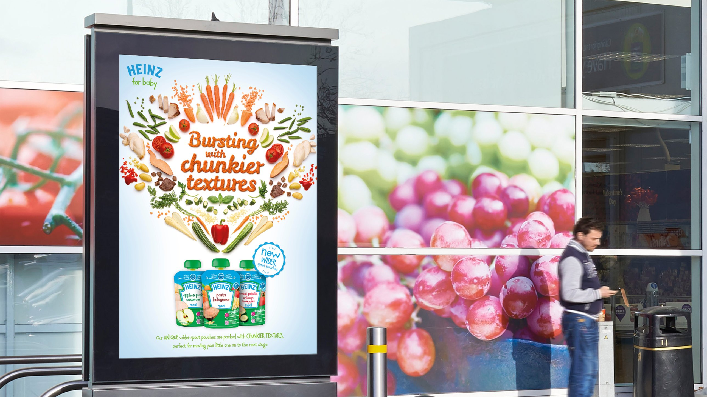

Kingdom of Portfolia
Choose Your Quest
Open this site on a desktop or laptop to play the full game, frog wizard included.
I · Lucozade
Back for the Believers
II · Somersby
Timeout from the Bullshit
III · Pringles
#PlayWith Pringles
IV · Royal British Legion
Every Pin Tells a Tale
V · McCain
Anything Goes
VI · Uber Eats
#bringit
VII · Rice Krispies Squares
Get Stuck In
VIII · McCain
Let’s All Chip In
IX · Lidl
The Great British Hijack
X · Lidl
Animal Crossing’s Coldest Drop
XI · Pringles Sizzl’n
Step Up The Spice
XII · Crunchy Nut
The Honey Drip Puffer
XIII · Sprite
B-Ball Fusion
XIV · Audi
Don’t Give Up On Your Dream Car
XV · Emirates
Flight Time Stories
XVI · Westfield
TikTok For You House

XVII · Heinz
Bursting with Chunkier Textures
XVIII · LEGO
Rebuild The World
Z
 Z
Z